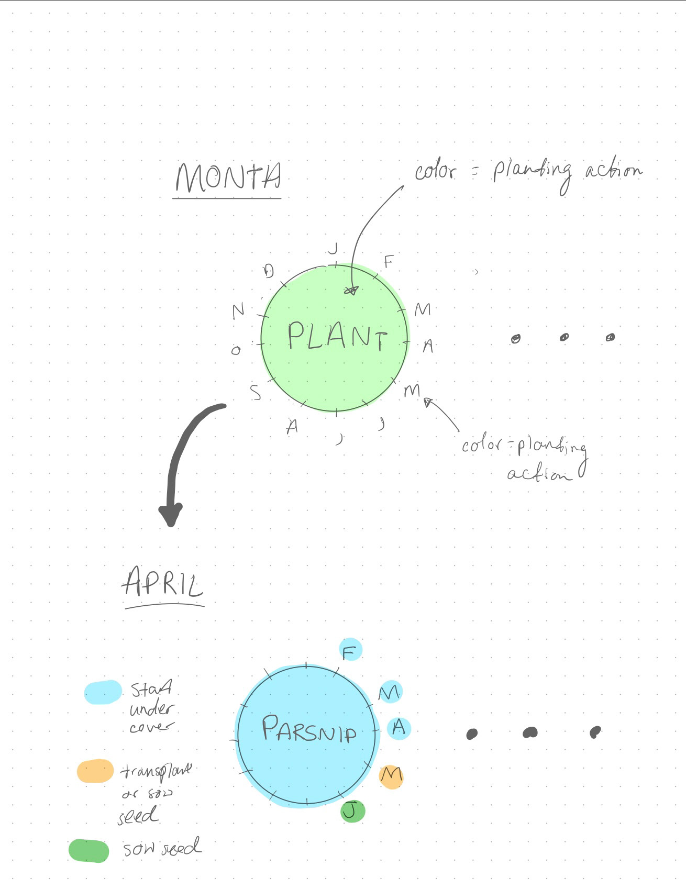
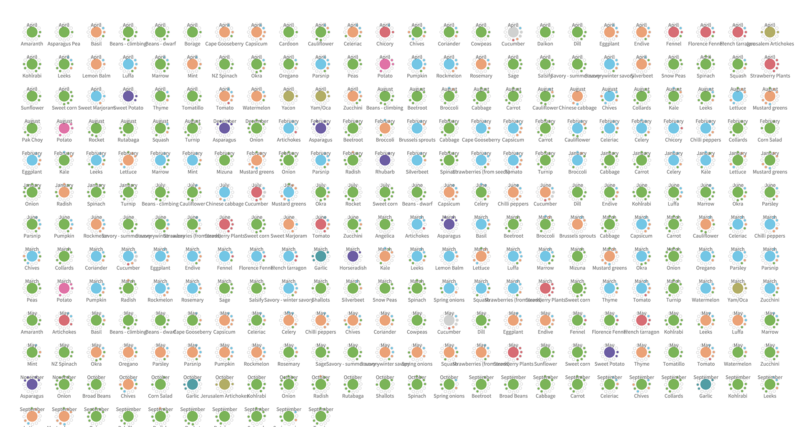
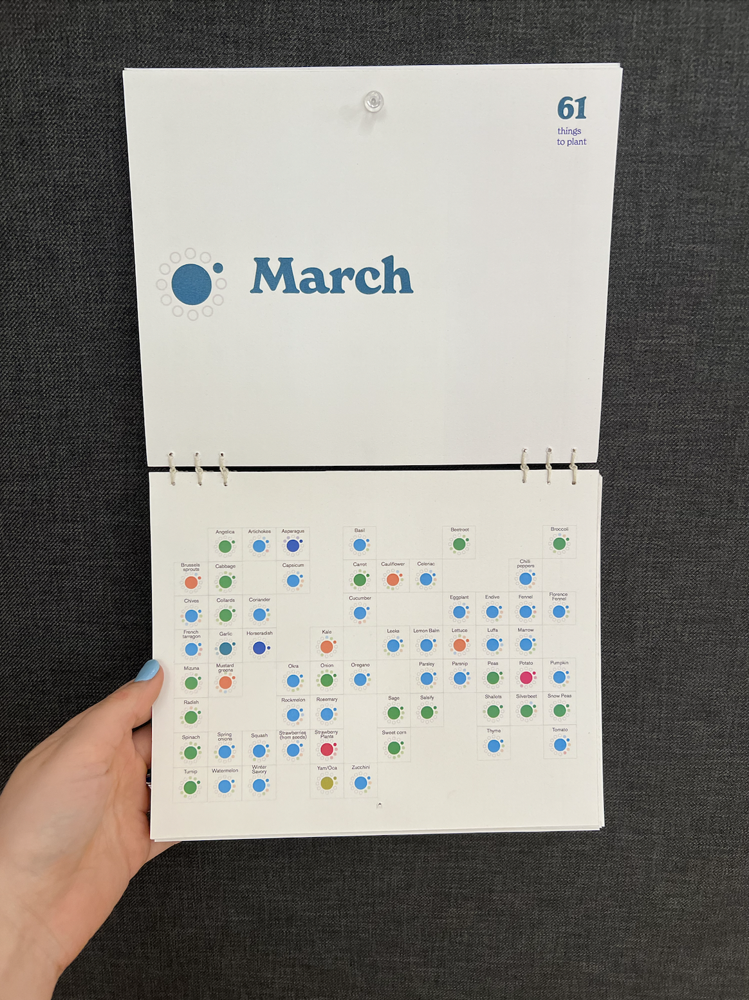

Planting calendar
HOME* Project Overview *

This calendar is a data visualization based product. It shows all the plants that can be grown, the months
they should be planted, and the planting actions you can take to grow those plants in Boston, MA (USA
Climate Zone 7A).
The data comes from Gardenate.com, a general reference planting guide for home gardeners.
The intended purpose of this project was to create a visualization that could assist the user in learning
how and when to plant specific vegetables, herbs, and edible flowers for the kitchen garden.
A user who may be interested in this calendar is a beginner gardener in Boston who wants to have a reference
guide for when, what, and how to plant for their specific climate zone. The data visualization improves upon
existing formats for understanding this information, such as the Gardenate website.
*Designing the Glyphs*
The data point for each plant is represented in a glyph notation. The main circle is the plant, colored with the associated planting action for that month. Around the edges of the main circle are the other months with an associated planting action.
On the right is my initial sketch of this concept, and below are snapshots from the final key that appears in the calendar.
* Implementation *
In order to implement this glyph for the data that I had, I wrote some code in processing. I set inventory for the months and the planting actions. Then, I extracted that information from my data and created two arrays. I drew the main circles, and then finally, I created a helper function "drawCircles" in order to draw the additional circles that form the glyph. My output from processing looked like this:
I then split the glyphs I had generated into a grid for each month of the calendar:
In early iterations of the design, the key appeared only in the introductory pages of the calendar. However, after testing this design in print, it became clear that this would make for a dysfunctional design. It is necessary to have the key to decode the meaning of the planting action colors, as it is too many unique values for a user to hold in their working memory. With the first iterations of the design, the user would have to be constantly flipping back and forth between the month and the key page at the beginning to repeat Cognitive Task/Visual Query #3. This becomes even more frustrating if the calendar is pinned up on the wall, as to flip back to the beginning to see the key you would have to completely remove the calendar from the wall. To solve this issue, I added an additional instance of the planting action key along the bottom of the last page, so that no matter what page of the calendar you are on, you can quickly decode the meaning of each color hue without having to remember 9 unique colors hues + their assigned planting action.